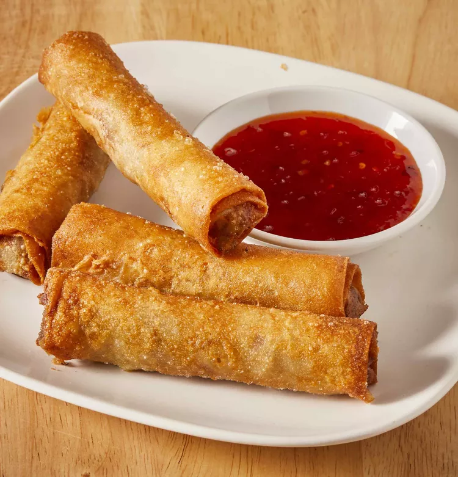

Filipino Lumpia

My Filipino stepmother made these delicious lumpia on special occasions.
You can find frozen lumpia wrappers at Asian grocery stores or use egg
roll wrappers as a substitute. Serve with banana ketchup if you can find
it.
Ingredients
- 1 (12 ounce) package lumpia wrappers
- 1 pound ground beef
- ½ pound ground pork
- ⅓ cup finely chopped onion
- ⅓ cup finely chopped green bell pepper
- ⅓ cup finely chopped carrot
- 1 quart oil for frying
Steps
-
Thaw lumpia wrappers if frozen. Lay several wrappers on a clean, dry
surface and cover with a damp towel to prevent wrappers from drying out.
-
Mix beef, pork, onion, green pepper, and carrot together in a medium
bowl. Place about 2 tablespoons of meat mixture along center of wrapper.
Do not overstuff wrappers or they will burn before meat is cooked. Fold
one edge of wrapper over filling. Fold outer edges in slightly, then
roll into a closed cylinder. Wet finger with water and moisten outer
edge to seal. Repeat with remaining wrappers and filling, keeping
finished lumpia covered to prevent drying.
-
Heat oil in a 9-inch skillet on medium to medium-high heat until oil
reaches 365 to 375 degrees F (170 to 175 degrees C). Fry 3 to 4 lumpia
at a time, turning in oil until nicely browned, about 2 to 3 minutes per
side. Drain on paper towels.
-
Cut each lumpia into thirds for parties, and serve with banana ketchup,
if you like.
Home